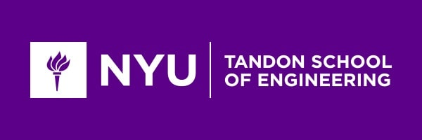

|  | Cybergirls Security Blog
|
|---|
| Home | About Me | About Cybergirls | Schedule | Testimony |
|---|
|
Shields Up! The NYU Cybergirls Cybersecurity Summer Program successfully equips a new generation of Digital Guardians! By Matthew Mobijohn: July 17, 2018 Success as students learn hands on Cybersecurity skills as part of the Cyber Girls program at NYU Tandon summer program. Great instruction and engaged students lead to a productive program. |
Featured Articles: GIRLs in gaming: Challenge accepted! NYU MAGNET attracts students to CS! Ariana Venti has gone Missing!! |
|---|---|
|
Students solve the case of Ariana Venti! By Matthew Mobijohn: July 19, 2018 In an intense case, of the recent disappearance of Ariana Venti, girls in the Cybersecurity program at NYU solved the mystery! Ariana is now safe and sound after it was discovered that a secret message was encoded using a Vigenere cypher. After investigating the crime scene, 2 balls of slime were found that contained the clues needed to solve the cipher. After much brainstorming and preserverance, the message "The key is in your hands" was arranged from what seemed to be a random mix of letter blocks. The intuition of these very smart detectives lead them to the realization that SLIME was the key to decoding this mystery. Congratulations Cyber Girls, you are heroes and we can now look forward to the release of Ariana's newest album! |